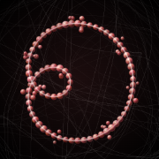
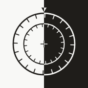

-
Sketchory
Eine Kritzelkarte zeichnet sich von selbst: Foto oder Scan laden, einen Satz schreiben, und es entsteht ein Video im Hochformat 3 : 4 – die Karte zeichnet sich Strich für Strich, weiss auf Schwarz oder schwarz auf Weiss, der Satz erscheint Buchstabe um Buchstabe, am Schluss das Signet von ornament.cloud. MP4 zum Herunterladen, alles im Browser. Prototyp, Stand 12. Oktober 2026.
-
The Fictory
Leg ein Bild auf die Werkbank: Es zerfällt in seine Teile, ordnet sich neu, hinterlässt Spuren und setzt sich am Ende neu zusammen. Eine Animation und sechs Standbilder, alles im Browser. Optional mit einer Regel aus ORNA. Prototyp, Stand 10. Oktober 2026.
-

PHORMA IIIAus Klang wird Bild: Zu Musik oder einer Stimme entstehen Gewebe aus feinen Linien, ein Faden im Würfel aus Licht, glänzende Perlen in einer Kugel aus Fäden – oder das Video selbst wird gescratcht und verfrickelt. Ein Video mit Ton für Social Media, alles auf dem Gerät; lässt sich als App installieren und läuft auch ohne Netz. Prototyp, Stand 19. Oktober 2026.
-

ORMAZehn Minuten zu zweit. Zwei Sichtweisen. Ein neuer Gedanke. Version 0.5.0 mit 48 Konstellationen und dem Modus allein (Re-Entry), Stand 27. September 2026. Die Einstiege und Spielaufträge sind Entwürfe.
-
Prüfraster: Nebeneinander und Nacheinander
Verräumlichung und Verzeitlichung als Achsen für die Ordnung von Theorien, Kunstpraxen und weiteren Ansätzen. Grundlagenpapier (PDF, 13 Seiten, präzisierte Arbeitsfassung vom 6. Oktober 2026) und Anwendungsprompt für einen KI-Assistenten (Version 3.2.0) mit Anleitung.
-
Der Verteilapparat des Körpers
Ein Prüfinstrument dafür, wessen Körperereignis wie weit kommt, unter welcher Beschreibung, wer sie berichtigen kann und was daraus materiell folgt. Grundlagenpapier (PDF, 8 Seiten, Stand 28. September 2026) und Anwendungsprompt für einen KI-Assistenten (Version 2.1.0) mit Anleitung.
-
Prüfraster für Gesellschaftskonzepte
Zurzeit in Arbeit
Einheit · Operation · Vermittlung. Ein voraussetzungsarmes Modell zur Vorprüfung von Ansätzen, die eine Gesellschaftsdiagnose beanspruchen. Grundlagenpapier (PDF, 16 Seiten, Entwurf 0.4, 3. Oktober 2026) und Anwendungsprompt für einen KI-Assistenten (Version 0.4.0) mit Anleitung.
-
Prüfraster journalistischer Texte
Zurzeit in Arbeit
Ereignis · Kontext · Übergang · Gegenprobe · Systembezüge. Wie macht ein journalistischer Text aus ausgewähltem Material eine Aussage, welche Unterscheidungen tragen diese Aussage, und was könnte ihre Geltung begrenzen oder verändern? Fassung 0.4, 3. Oktober 2026, und Anwendungsprompt für einen KI-Assistenten (Version 0.4.0) mit Anleitung. Neu als Vorschlag für Fassung 0.5: ein Modul für Wissenschaftskommunikation.
-
OMNA COLOR
Zwei Farbräder drehen gegeneinander. Zeigen sie zwei Farben, verbindet die Übung beide Themen, zeigen sie dieselbe Farbe, bleibt es beim reinen Thema. Gezogen wird aus 180 Gestaltungsübungen, mit dem Daumen oder per Knopf. Prototyp, Stand 2. Oktober 2026.
-
Das Dritte Rad
Drei Ringe drehen auf einer Achse: aussen die Zeit («Zu seiner Zeit», sieben Zyklen), in der Mitte die Form (die 40 Zeichen von ORNA), innen die Farbe (OMNA COLOR). Jeder Treffer öffnet sich im Rad (ganzer Text, ganze Begegnung, ganze Übung), und in jedem Schritt geht es weiter: in den Zettelkasten, nach ORNA, zu OMNA COLOR oder zurück ins Rad. Dazwischen schlägst du Brücken, die jev beim Bauen bewertet hat, und schreibst einen einzigen Satz. Gestaltet nach Tierkreis, Alchemie-Kreis und Goethes Farbenkreis, ohne Schrift im Rad. Prototyp, Stand 2. Oktober 2026.
-
Die Paradoxie der Stadt
Ein kleines Quartier, das ohne dich lebt: Menschen mit eigenen Wegen, Autos, ein Bus, eine Ampel, ein Atelier. Du öffnest eine Fahrspur, baust eine Brücke, versetzt eine Bank oder änderst die Bedingungen am Offenen Abend – und folgst den Folgen, auch nach der Rücknahme. Vier urbane Paradoxien nach der Grafik von Klaus Kusanowsky, die beiden Prüfraster als «Genauer hinsehen», Entscheidungsneigungen von jev beim Bauen eingeschätzt. Prototyp, Stand 9. Oktober 2026.
-
Aufnahme
Animationen von beliebigen Webseiten als Video sichern: einen Tab oder ein Fenster freigeben, den Ausschnitt aufziehen (frei, 9 : 16, 4 : 5, 1 : 1 oder 16 : 9), Grösse, Bildrate und Dauer wählen, aufnehmen und als MP4 oder WebM herunterladen. Alles bleibt im Browser. Am Computer, nicht auf dem Handy. Prototyp, Stand 11. Oktober 2026.